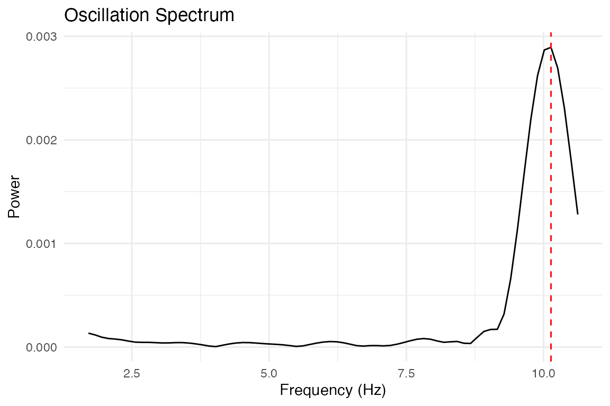
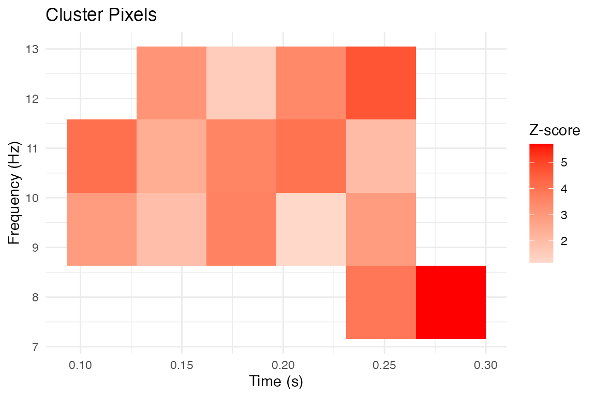

Introduction
The bosc package provides low-level functions for oscillation analysis, but also includes high-level workflow wrappers that simplify common analysis patterns. These wrappers are designed to: - Accept configuration lists for reproducible, programmatic analyses - Combine multiple steps (e.g., compute score + surrogates + significance) in one call - Provide tidy output formats for easy integration with tidyverse workflows
For the underlying algorithms, see
vignette("oscillation-score") and
vignette("ppc-clustering").
Quick Start: One-Call Significance Testing
The most common workflow is computing an oscillation score and
testing its significance against surrogates.
oscillation_score_z() does this in one call:
# Generate a signal with 10 Hz periodicity
set.seed(42)
fs <- 1000
sig <- numeric(fs * 2)
spike_times <- seq(50, 1950, by = 100) + round(rnorm(20, sd = 5))
spike_times <- spike_times[spike_times > 0 & spike_times <= length(sig)]
sig[spike_times] <- 1
# One-call analysis: compute oscore, surrogates, and z-score
result <- oscillation_score_z(
signal = sig,
fs = fs,
flim = c(5, 20),
nrep = 200,
alpha = 0.05,
taper = "hanning"
)
cat("Oscillation score:", round(result$oscore, 3), "\n")
#> Oscillation score: 1.17
cat("Peak frequency:", round(result$fosc, 2), "Hz\n")
#> Peak frequency: 7.82 Hz
cat("Z-score:", round(result$z, 2), "\n")
#> Z-score: -1.46
cat("P-value:", format(result$pval, digits = 3), "\n")
#> P-value: 0.928
cat("Significant:", result$significant, "\n")
#> Significant: FALSEConfiguration-List Workflows
When running batch analyses across subjects or conditions, it’s
convenient to define parameters once and reuse them. The
_config wrappers accept named lists:
Basic Config-Driven Analysis
# Define analysis parameters
config <- list(
fs = 1000,
flim = c(1, 50),
quantlim = c(0.05, 0.95),
smoothach = TRUE,
smoothwind = 0.002,
peakwind = 0.008,
taper = "hanning",
warnings = "off"
)
# Apply to signal
os <- oscillation_score_config(config, sig)
cat("Oscillation score:", round(os$oscore, 3), "\n")
#> Oscillation score: 43.858
cat("Peak frequency:", round(os$fosc, 2), "Hz\n")
#> Peak frequency: 10.13 HzSurrogate Config Workflow
# Extend config for surrogate analysis
config_sur <- modifyList(config, list(
nrep = 200,
fpeak = os$fosc,
keep_trend = FALSE
))
sur <- oscillation_score_surrogates_config(config_sur, sig)
# Compute statistics from surrogate distribution
z <- (log(os$oscore) - mean(log(sur$oscore_rp), na.rm = TRUE)) /
sd(log(sur$oscore_rp), na.rm = TRUE)
cat("Surrogate mean:", round(mean(sur$oscore_rp), 3), "\n")
#> Surrogate mean: 4.293
cat("Surrogate SD:", round(sd(sur$oscore_rp), 3), "\n")
#> Surrogate SD: 3.128
cat("Log-Z score:", round(z, 2), "\n")
#> Log-Z score: 3.13Batch Analysis Example
# Simulate multiple subjects with varying oscillation strength
set.seed(123)
n_subjects <- 5
# Create subjects with different oscillation strengths
subjects <- lapply(1:n_subjects, function(i) {
sig <- numeric(2000)
# Vary jitter: stronger oscillation = less jitter
jitter_sd <- 5 + (i - 1) * 3
spikes <- seq(50, 1950, by = 100) + round(rnorm(20, sd = jitter_sd))
spikes <- spikes[spikes > 0 & spikes <= 2000]
sig[spikes] <- 1
sig
})
# Apply same config to all subjects
results <- lapply(subjects, function(s) {
oscillation_score_z(s, fs = 1000, flim = c(5, 20), nrep = 100, tidy = TRUE)
})
# Combine results
batch_results <- do.call(rbind, results)
batch_results$subject <- 1:n_subjects
print(batch_results[, c("subject", "oscore", "fosc", "z", "significant")])
#> subject oscore fosc z significant
#> 1 1 44.81143 9.775171 4.058299 TRUE
#> 2 2 44.81143 9.775171 4.058299 TRUE
#> 3 3 48.91388 9.775171 4.222812 TRUE
#> 4 4 48.91388 9.775171 4.222812 TRUE
#> 5 5 40.35858 9.775171 3.303521 TRUE
#> 6 1 40.35858 9.775171 3.303521 TRUE
#> 7 2 26.09299 9.775171 2.600084 TRUE
#> 8 3 26.09299 9.775171 2.600084 TRUE
#> 9 4 26.60936 9.775171 2.669158 TRUE
#> 10 5 26.60936 9.775171 2.669158 TRUEPhase at Event Times
A common analysis extracts the instantaneous phase of an oscillation
at specific event times (e.g., button presses, stimulus onsets).
phase_at_events() handles the full pipeline:
Convert event times to a continuous trace
Narrowband filter at the frequency of interest
Extract Hilbert phase at each event
# Event times in seconds (e.g., button presses)
events <- c(0.15, 0.25, 0.35, 0.45, 0.55, 0.65, 0.75, 0.85, 0.95)
# Extract phase at 10 Hz
phases <- phase_at_events(
events = events,
dt = 0.001, # 1 ms time resolution
fosc = 10, # Center frequency
bandwidth = 1 # +/- 1 Hz band
)
cat("Phases at events (radians):\n")
#> Phases at events (radians):
print(round(phases, 2))
#> [1] -0.01 0.00 0.00 -0.01 -0.01 -0.01 0.02 0.13 1.52
# Check phase consistency
cat("\nMean resultant length:", round(circ_r(phases), 3), "\n")
#>
#> Mean resultant length: 0.902
ray <- circ_rayleigh(phases)
cat("Rayleigh p-value:", format(ray$pval, digits = 3), "\n")
#> Rayleigh p-value: 2.93e-05Leave-One-Out Phase Estimation
For unbiased phase estimation (avoiding circular analysis), use leave-one-out:
# Each event's phase is computed from a trace excluding that event
phases_loo <- phase_at_events(
events = events,
dt = 0.001,
fosc = 10,
bandwidth = 1,
leave_one_out = TRUE
)Tidy Output Helpers
The package includes helper functions to convert results to tidy data.frames, making it easy to combine results across analyses or use with ggplot2/dplyr. ### oscore_tidy: Oscillation Score Summaries
# Single result
oscore_tidy(os)
#> oscore fosc fmin fmax
#> 1 43.85796 10.13431 1.681614 10.65022
# Can also handle oscillation_score_z output
z_result <- oscillation_score_z(sig, fs = 1000, flim = c(5, 20), nrep = 50)
oscore_tidy(z_result)
#> oscore fosc fmin fmax z pval significant
#> 1 4.90813 7.331378 5 10.50972 0.334394 0.3690411 FALSEoscore_spectrum: Extract Spectrum Data
# Get spectrum as a data.frame for plotting
spec_df <- oscore_spectrum(os)
head(spec_df)
#> freq power
#> 1 1.709402 1.338058e-04
#> 2 1.831502 1.166433e-04
#> 3 1.953602 9.469540e-05
#> 4 2.075702 8.186402e-05
#> 5 2.197802 7.682177e-05
#> 6 2.319902 6.915301e-05
# Plot with ggplot2
if (requireNamespace("ggplot2", quietly = TRUE)) {
library(ggplot2)
ggplot(spec_df, aes(x = freq, y = power)) +
geom_line() +
geom_vline(xintercept = os$fosc, linetype = "dashed", color = "red") +
labs(x = "Frequency (Hz)", y = "Power", title = "Oscillation Spectrum") +
theme_minimal()
}
#> Warning: package 'ggplot2' was built under R version 4.5.2
clusters_tidy: Cluster Summaries
After detecting clusters in time-frequency maps, convert to tidy format:
# Create example time-frequency data with clusters
set.seed(456)
n_freq <- 20
n_time <- 30
t_matrix <- matrix(rnorm(n_freq * n_time), nrow = n_freq)
# Add cluster
t_matrix[5:8, 10:15] <- t_matrix[5:8, 10:15] + 3
# Detect clusters
freq_axis <- seq(2, 30, length.out = n_freq)
time_axis <- seq(-0.2, 0.8, length.out = n_time)
clusters <- detect_clusters(
data = t_matrix,
threshold = 2.0,
method = "extract",
smooth = 1,
freq_axis = freq_axis,
time_axis = time_axis
)
# Convert to tidy summary
cluster_summary <- clusters_tidy(clusters)
print(cluster_summary[, c("cluster", "n_pixels", "freq_min", "freq_max",
"time_min", "time_max", "sumZscore")])
#> cluster n_pixels freq_min freq_max time_min time_max sumZscore
#> 1 1 16 7.894737 12.31579 0.1103448 0.2827586 50.89751clusters_pixels: Per-Pixel Data
For detailed analysis or custom plotting, get all cluster pixels:
# Get all pixels from detected clusters
pixel_df <- clusters_pixels(clusters)
head(pixel_df)
#> cluster time freq Zscore pAdj
#> 1 1 0.1103448 9.368421 2.899204 NA
#> 2 1 0.1103448 10.842105 4.070153 NA
#> 3 1 0.1448276 9.368421 1.927576 NA
#> 4 1 0.1448276 10.842105 2.432312 NA
#> 5 1 0.1448276 12.315789 3.129383 NA
#> 6 1 0.1793103 9.368421 3.600278 NA
# Example: plot cluster extent
if (requireNamespace("ggplot2", quietly = TRUE) && nrow(pixel_df) > 0) {
ggplot(pixel_df, aes(x = time, y = freq, fill = Zscore)) +
geom_tile() +
scale_fill_gradient2(low = "blue", mid = "white", high = "red", midpoint = 0) +
labs(x = "Time (s)", y = "Frequency (Hz)", fill = "Z-score",
title = "Cluster Pixels") +
theme_minimal()
}
Complete Analysis Pipeline
Here’s a complete example combining the workflow wrappers:
set.seed(789)
# 1. Generate behavioral data with oscillatory structure
fs <- 1000
duration <- 3
n_samples <- fs * duration
# Response times with 8 Hz periodicity
base_times <- seq(0.1, 2.9, by = 0.125) # 8 Hz
event_times <- base_times + rnorm(length(base_times), sd = 0.01)
event_times <- sort(event_times[event_times > 0 & event_times < duration])
# Convert to spike train
sig <- numeric(n_samples)
sig[round(event_times * fs)] <- 1
# 2. Compute oscillation score with significance
config <- list(
fs = fs,
flim = c(4, 15),
nrep = 200,
alpha = 0.05,
taper = "hanning"
)
z_result <- oscillation_score_z(
signal = sig,
fs = config$fs,
flim = config$flim,
nrep = config$nrep,
alpha = config$alpha,
taper = config$taper
)
# 3. Extract phases at response times
phases <- phase_at_events(
events = event_times,
dt = 1/fs,
fosc = z_result$fosc,
bandwidth = 1
)
# 4. Test phase consistency
ray <- circ_rayleigh(phases)
# 5. Report results
cat("=== Oscillation Analysis Results ===\n\n")
#> === Oscillation Analysis Results ===
cat("Oscillation Score Analysis:\n")
#> Oscillation Score Analysis:
cat(sprintf(" O-score: %.3f\n", z_result$oscore))
#> O-score: 50.978
cat(sprintf(" Peak frequency: %.2f Hz\n", z_result$fosc))
#> Peak frequency: 7.82 Hz
cat(sprintf(" Z-score: %.2f\n", z_result$z))
#> Z-score: 3.44
cat(sprintf(" P-value: %.4f\n", z_result$pval))
#> P-value: 0.0003
cat(sprintf(" Significant: %s\n\n", z_result$significant))
#> Significant: TRUE
cat("Phase Consistency:\n")
#> Phase Consistency:
cat(sprintf(" Mean phase: %.2f rad\n", circ_mean(phases)))
#> Mean phase: 0.07 rad
cat(sprintf(" Resultant length: %.3f\n", circ_r(phases)))
#> Resultant length: 0.904
cat(sprintf(" Rayleigh p-value: %.4f\n", ray$pval))
#> Rayleigh p-value: 0.0000Summary of Workflow Functions
| Function | Purpose | Key Benefit |
|---|---|---|
oscillation_score_z() |
O-score + surrogates + z-score | One-call significance testing |
oscillation_score_config() |
Config-driven O-score | Batch processing, reproducibility |
oscillation_score_surrogates_config() |
Config-driven surrogates | Batch processing |
phase_at_events() |
Extract phases at event times | Full pipeline in one call |
oscore_tidy() |
Convert results to data.frame | Tidyverse integration |
oscore_spectrum() |
Extract spectrum as data.frame | Easy plotting |
clusters_tidy() |
Summarize clusters | Quick cluster statistics |
clusters_pixels() |
Per-pixel cluster data | Custom analyses/plotting |
Session Info
sessionInfo()
#> R version 4.5.1 (2025-06-13)
#> Platform: aarch64-apple-darwin20
#> Running under: macOS Sonoma 14.3
#>
#> Matrix products: default
#> BLAS: /Library/Frameworks/R.framework/Versions/4.5-arm64/Resources/lib/libRblas.0.dylib
#> LAPACK: /Library/Frameworks/R.framework/Versions/4.5-arm64/Resources/lib/libRlapack.dylib; LAPACK version 3.12.1
#>
#> locale:
#> [1] en_CA.UTF-8/en_CA.UTF-8/en_CA.UTF-8/C/en_CA.UTF-8/en_CA.UTF-8
#>
#> time zone: America/Toronto
#> tzcode source: internal
#>
#> attached base packages:
#> [1] stats graphics grDevices utils datasets methods base
#>
#> other attached packages:
#> [1] ggplot2_4.0.1 bosc_0.0.0.9000
#>
#> loaded via a namespace (and not attached):
#> [1] sass_0.4.10 generics_0.1.4 tiff_0.1-12 jpeg_0.1-11
#> [5] stringi_1.8.7 pracma_2.4.6 digest_0.6.39 magrittr_2.0.4
#> [9] evaluate_1.0.5 grid_4.5.1 RColorBrewer_1.1-3 fastmap_1.2.0
#> [13] jsonlite_2.0.0 purrr_1.2.0 scales_1.4.0 textshaping_1.0.4
#> [17] jquerylib_0.1.4 cli_3.6.5 rlang_1.1.6 withr_3.0.2
#> [21] cachem_1.1.0 yaml_2.3.12 tools_4.5.1 dplyr_1.1.4
#> [25] vctrs_0.6.5 R6_2.6.1 png_0.1-8 bmp_0.3.1
#> [29] lifecycle_1.0.4 stringr_1.6.0 fs_1.6.6 htmlwidgets_1.6.4
#> [33] MASS_7.3-65 ragg_1.5.0 pkgconfig_2.0.3 desc_1.4.3
#> [37] pkgdown_2.2.0 pillar_1.11.1 bslib_0.9.0 gtable_0.3.6
#> [41] glue_1.8.0 Rcpp_1.1.0 systemfonts_1.3.1 xfun_0.54
#> [45] tibble_3.3.0 tidyselect_1.2.1 knitr_1.50 farver_2.1.2
#> [49] readbitmap_0.1.5 htmltools_0.5.9 imager_1.0.5 igraph_2.2.1
#> [53] rmarkdown_2.30 labeling_0.4.3 signal_1.8-1 compiler_4.5.1
#> [57] S7_0.2.1